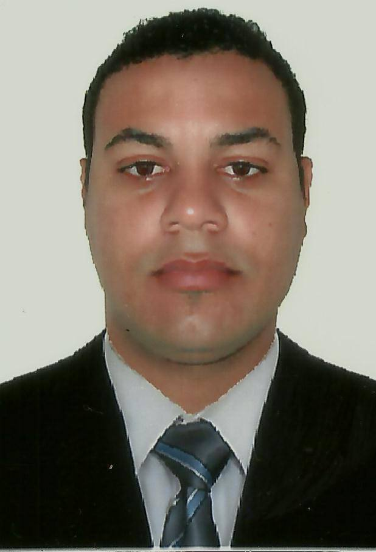

Minhas redes sociais


35 anos, Solteiro
E-mail: ezequiellessa@gmail.com
País de Nacionalidade: Brasil
Telefone: 5571982074297
Celular: (71)982074297
Endereço: Caminho dos Lençóis, número 07, Gleba E, 42808235 Camaçari Bahia Brasil
Site Pessoal / Blog: portifolio-ezequiellessa / github de ezequiel lessa
Estágio ou Junior /Treine na área de Análise e Desenvolvimento de Sistemas, Frontend, Backend, fullstack e afins
Olá ne chamo Ezequiel tenho 35 anos , Apaixonado por Tecnologia em Transição de carreira da área industrial para carreira Tecnológica ,Estou atualmente no 3º período o análise e desenvolvimento de software na faculdade Pitágoras de Camaçari - BA . Possuo Curso de Formação de Desenvolvedor Full Stack Jr da StartSe Tech Academy e Cursando formação FullStack da Devaria parceria com +1code e Instituto NU + curso de Inglês com Leo Reis. também cursando Turma 4 do ONE - Oracle Next Education Além de buscar conhecimento por meio de cursos na plataforma udemy , Rocketseat entre outras , tenho como objetivo inicial me tornar um Desenvolvedor frontend Jr ou um Estágio dentro da área da Tecnologia.
Ensino Médio - Completo
Superior em Análise e Desenvolvimento de Sistemas, Universidade Pitágoras - Cursando 3ª semestre
Técnico em Automação Industrial, CETEPPS - Concluído
Inglês-Tecnico
Faixa de R$ 2.000,00(Real)
Trabalho Remoto
Aceita viajar pela empresa.
Aceita considerar propostas de outras regiões.
Possua cursos complementares :
Web Developer - Bootcamp da dio
Formação Desenvolvedor Fullstack jr - StartSE
Formação Desenvolvedor Fullstack jr - +1code(Cursando)
Git e Github Essencial para o Desenvolvedor - Plataforma Udemy -Geek University
Curso Web Design Completo: HTML5, CSS3 e JS - Plataforma Udemy-serfrontend Cursos
By ezequiellessaDev